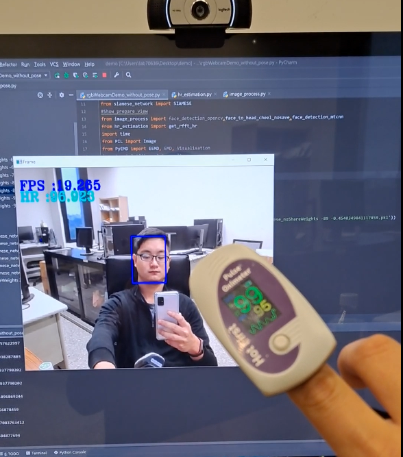

盲訊號雷達分類任務
藉由輸入雷達訊號的相關參數(PRF，PW)產生隨機雷達訊號，並透過深度學習去訓練此訊號，分析出此時有哪個頻段的雷達訊號開啟。
使用程式：Python
特色與說明
- 藉由軟體模擬的方法來製作出擬真的雷達訊號
- 傳統雷達在多頻段與多訊號的干擾下較難勝任此任務，因此我們透過深度學習模型來勝出傳統技術的準確度
第一階段 - 雷達訊號模擬
- 收集影像資訊：
- 來自無接觸式裝置（例如攝像頭）讀取影像資訊。
- 綠色通道遮罩：
- 對收集到的影像進行綠色通道的遮罩，以提取有效的PPG信息。
- 綠色光在血液中的吸收和反射特性較高，更能反映心跳的變化，增強PPG信號的可見度。
- 權重分配：
- 為影像中的不同區域分配不同的權重，用於計算加權區域的PPG信號。
第二階段 - 分類模型
- 使用模型：
- 在高頻和中頻部分，使用BERT的pre-trained model進行遷移學習，進行多標籤分類，總共有25個分類，代表了不同雷達模式。 在低頻部分，由於低頻雷達的難度較高，每個雷達單獨進行單分類，總共有5個模型，每個模型有6個分類，包括5個模式和一個未開啟的分類。 此外，為了改善低頻雷達的訓練效果，引入了多任務學習的方法，其中一個任務是標記是否存在特定的低頻雷達信號。
- 低頻雷達與高頻雷達：
- 高中頻雷達使用方法與模型：多分類任務
- 多分類任務
- BERT Transfer Learning
- 低頻雷達使用方法與模型
- 單分類任務
- FNet Transfer Learning
- 高中頻雷達使用方法與模型：多分類任務
Demo

利用指夾式心律來驗證正確與否
 我們提出的方法在各項數據上皆有好的表現
我們提出的方法在各項數據上皆有好的表現